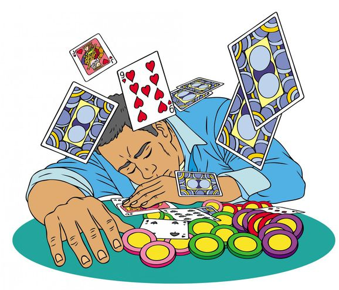

ADICCION AL JUEGO

Las personas que juegan y apuestan de manera
compulsiva a menudo tienen problemas de abuso de sustancias, trastornos de
personalidad, depresión o ansiedad. La ludopatía también puede estar asociada
al trastorno bipolar, al trastorno obsesivo compulsivo o al trastorno por
déficit de atención con hiperactividad. Edad.
La ludopatía
es una enfermedad que se caracteriza por un fracaso crónico y progresivo en
resistir los impulsos de jugar apostando dinero.
Factores de riesgo
Si
bien la mayoría de las personas que juegan a las cartas o que apuestan
nunca llegan a tener un problema con el juego y las apuestas, ciertos
factores están más asociados a la ludopatía:
- Trastornos de salud mental. Las
personas que juegan y apuestan de manera compulsiva a menudo tienen
problemas de abuso de sustancias, trastornos de personalidad, depresión
o ansiedad. La ludopatía también puede estar asociada al trastorno
bipolar, al trastorno obsesivo compulsivo o al trastorno por déficit de
atención con hiperactividad.
- Edad. La
ludopatía es más frecuente en personas jóvenes y de mediana edad. El
juego y las apuestas durante la infancia o los años de la adolescencia
aumentan el riesgo de sufrir ludopatía más adelante. Sin embargo, la
ludopatía en la población de adultos mayores también puede ser un
problema.
- Sexo. La
ludopatía es más frecuente en hombres que en mujeres. Las mujeres que
juegan por lo general empiezan más tarde en la vida y pueden volverse
adictas con mayor rapidez. Sin embargo, los patrones de juego entre
hombres y mujeres son cada vez más similares.